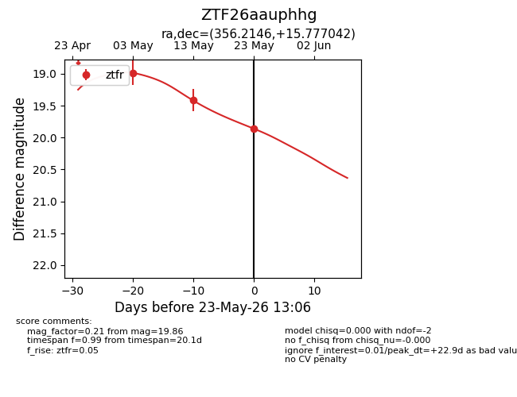
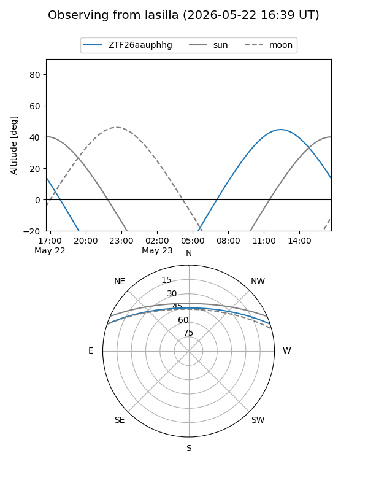
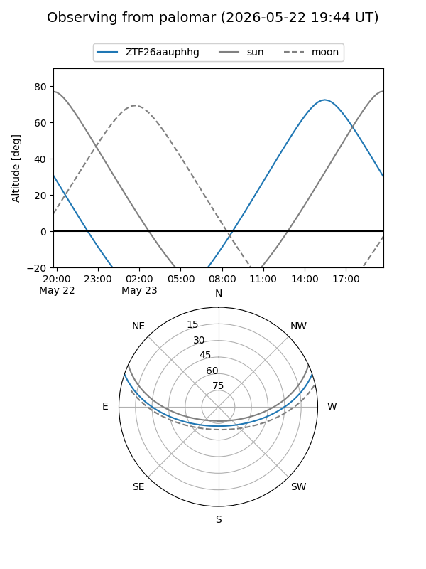
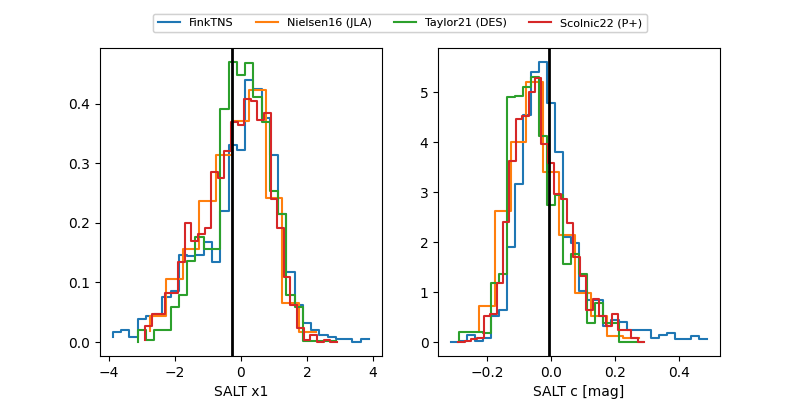

ZTF26aauphhg
Target ZTF26aauphhg at 2026-05-23 13:08
Aliases and brokers:
lsst-FINK: link
lsst-Lasair: link
lsst-ALeRCE: link
ztf-FINK: link
ztf-Lasair: link
ztf-ALeRCE: link
alt names
ZTF26aauphhg (ztf,fink_ztf)
Coordinates:
equatorial (ra, dec) = 356.2146,+15.77704
equatorial (HMS+DMS) = 23:44:51.51,+15:46:37.35
galactic (l, b) = (100.3381,-44.15431)
Flags:
Photometry:
last ztfr=19.86
3 ztfr detections
Lightcurve

Visibility


Additional plots
